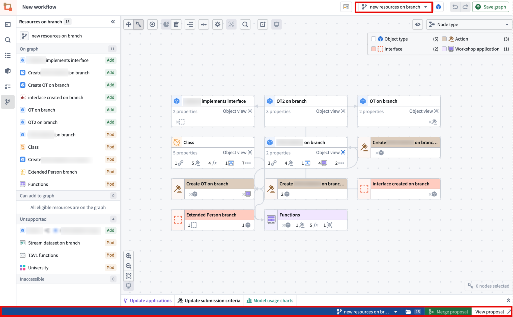
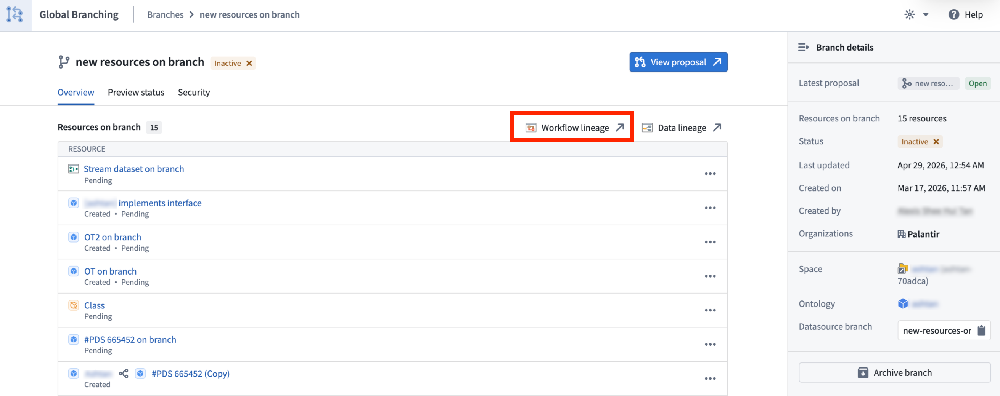
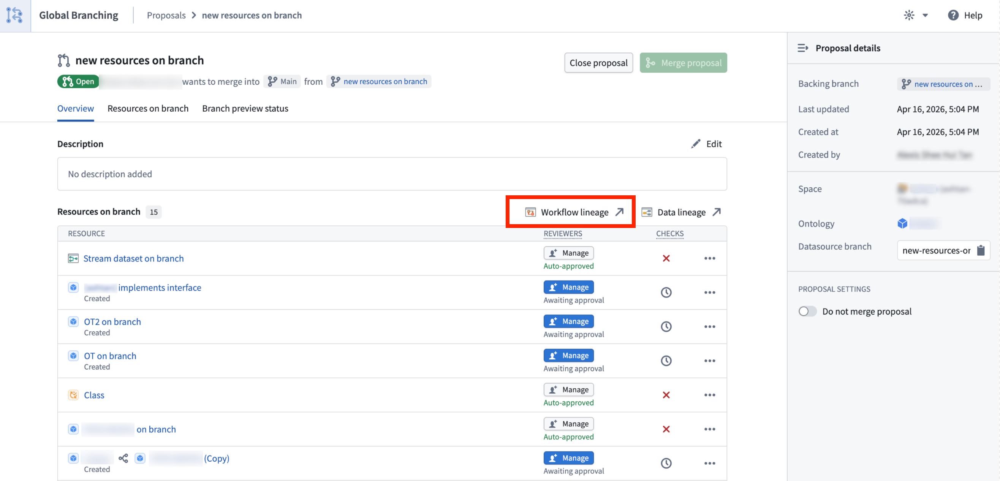
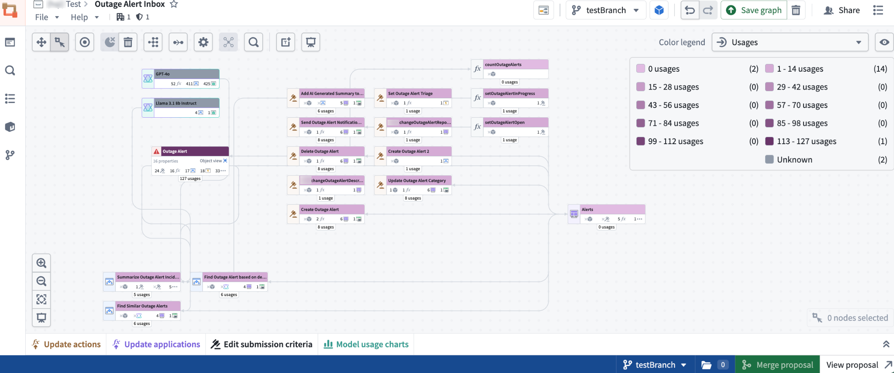
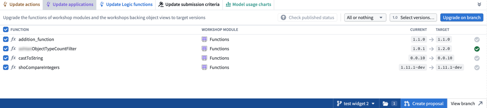

The AI FDE panel, by right-clicking a global branch tag or when selecting a global branch context to add.


The global branch bottom bar.

The global branch main branch page.
Workflow Lineage supports Global Branching, allowing you to inspect, edit, and validate workflow resources on a branch before merging changes into main.
When you enter Workflow Lineage on a branch or switch to a branch, the application automatically selects the branch details sidebar and branch changes color mode. These views show which resources are added, modified, deleted, or unchanged.
For general information on Global Branching concepts and workflows, refer to the Global Branching documentation. For details on navigating the Global Branching application interface, see the Global Branching application documentation.

When working on a global branch, you can open Workflow Lineage from a variety of supported branch-aware entry points, including:
The AI FDE panel, by right-clicking a global branch tag or when selecting a global branch context to add.
The global branch bottom bar.
The global branch main branch page.

<br>
The global branch proposal page.

<br>
Eligible resources are added to the graph automatically, and the branch side panel helps you review any added or modified resources. You can also use Cmd+I (macOS) or Ctrl+I (Windows) from supported resources on a branch to open Workflow Lineage in the same branch context. This is supported from Workshop, Ontology Manager, AIP Logic, and Pipeline Builder object type outputs.
You can delete ontology resources and create new branches directly from Main in Workflow Lineage. If you are already working on a branch, you can delete resources on the selected branch.
With Global Branching in Workflow Lineage, you can use branch-aware color modes for function repositories, action rules, Ontology status, usages, and out-of-date dependencies.

You can also perform supported bulk edits, including upgrading function versions for action types or Workshops, deleting Ontology resources, and updating action type submission criteria.

You can also search for and add resources created on a branch, including object types, action types, functions, and interfaces. Use the side panel to review modified resources and add modified resources that are not already on the graph.
When viewing resources on a branch, Workflow Lineage color codes each resource based on its change status: Added, Modified, Deleted, or Unchanged.
main branch.